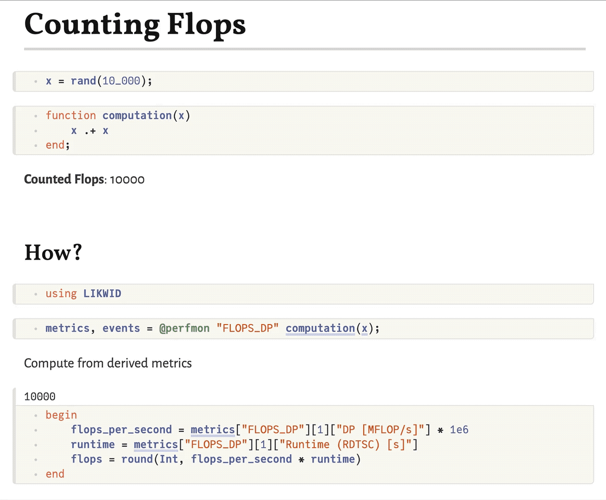

Counting FLOPs
Have you ever wondered how many floating point operations (FLOPs) a certain block of code, e.g. a Julia function, has actually triggered in a CPU core? With LIKWID.jl you can readily answer this question!
Let's consider a simple example: daxpy. The abbreviation daxpy stands for double-precision (Float64) a times x plus y, i.e. the computation
\[z = a \cdot x + y\]
Of course, we can readily write this as a Julia function.
daxpy!(z, a, x, y) = z .= a .* x .+ ydaxpy! (generic function with 1 method)Preparing some random input we can perform the daxpy! operation as per usual (we're suppressing the unimportant output below).
const N = 10_000
const a = 3.141
const x = rand(N)
const y = rand(N)
const z = zeros(N)
daxpy!(z, a, x, y);Let's now use LIKWID to count the actually performed FLOPs for this computation! Concretely, we measure the FLOPS_DP performance group, in which "DP" stands for "double precision".
using LIKWID
metrics, events = @perfmon "FLOPS_DP" daxpy!(z, a, x, y);
Group: FLOPS_DP
┌──────────────────────────────────────────┬──────────┐
│ Event │ Thread 1 │
├──────────────────────────────────────────┼──────────┤
│ INSTR_RETIRED_ANY │ 11759.0 │
│ CPU_CLK_UNHALTED_CORE │ 133737.0 │
│ CPU_CLK_UNHALTED_REF │ 88320.0 │
│ FP_ARITH_INST_RETIRED_128B_PACKED_DOUBLE │ 0.0 │
│ FP_ARITH_INST_RETIRED_SCALAR_DOUBLE │ 0.0 │
│ FP_ARITH_INST_RETIRED_256B_PACKED_DOUBLE │ 5000.0 │
│ FP_ARITH_INST_RETIRED_512B_PACKED_DOUBLE │ 0.0 │
└──────────────────────────────────────────┴──────────┘
┌──────────────────────┬────────────┐
│ Metric │ Thread 1 │
├──────────────────────┼────────────┤
│ Runtime (RDTSC) [s] │ 7.18004e-5 │
│ Runtime unhalted [s] │ 5.58628e-5 │
│ Clock [MHz] │ 3625.11 │
│ CPI │ 11.3732 │
│ DP [MFLOP/s] │ 278.55 │
│ AVX DP [MFLOP/s] │ 278.55 │
│ AVX512 DP [MFLOP/s] │ 0.0 │
│ Packed [MUOPS/s] │ 69.6375 │
│ Scalar [MUOPS/s] │ 0.0 │
│ Vectorization ratio │ 100.0 │
└──────────────────────┴────────────┘
That was easy. Let's see what we got. Among all those results, for computing the total number of FLOPs we care about the metrics "DP [MFLOP/s]", which gives the MFLOPs per second, and "Runtime (RDTSC) [s]", which indicates the total runtime. By multiplying the two we get the desired total number of FLOPs.
flops_per_second = first(metrics["FLOPS_DP"])["DP [MFLOP/s]"] * 1e6
runtime = first(metrics["FLOPS_DP"])["Runtime (RDTSC) [s]"]
NFLOPs_actual = round(Int, flops_per_second * runtime)20000Let's check whether this number makes sense. Our vectors are of length N and for each element we perform two FLOPs in the daxpy operation: one multiplication and one addition. Hence, our expectation is
NFLOPs_expected(N) = 2 * N
NFLOPs_expected(N)20000Note that this perfectly matches our measurement result above!
NFLOPs_actual == NFLOPs_expected(N)trueTo rule out that this is just a big coincidence, let's try to modify N and check again. For convenience, let's wrap the above procedure into a function.
function count_FLOPs(N)
a = 3.141
x = rand(N)
y = rand(N)
z = zeros(N)
metrics, _ = perfmon(() -> daxpy!(z, a, x, y), "FLOPS_DP"; print=false)
flops_per_second = first(metrics["FLOPS_DP"])["DP [MFLOP/s]"] * 1e6
runtime = first(metrics["FLOPS_DP"])["Runtime (RDTSC) [s]"]
return round(Int, flops_per_second * runtime)
endcount_FLOPs (generic function with 1 method)See how it still matches our expectation when varying the input!
count_FLOPs(2 * N) == NFLOPs_expected(2 * N)trueFeel free to play around further and apply this knowledge to other operations! As an inspiration: How many FLOPs does an exp.(x) or sin.(x) trigger? Does the answer depend on the length of x?
Bonus: Reactive FLOPs Counting
It is a lot of fun to combine the low-level performance monitoring tools of LIKWID.jl with the beautiful high-level interface provided by Pluto.jl. In the following example, we can arbitrarily modify the function computation and - through Pluto's reactivity - the counted number of FLOPs will automatically update.

This page was generated using Literate.jl.